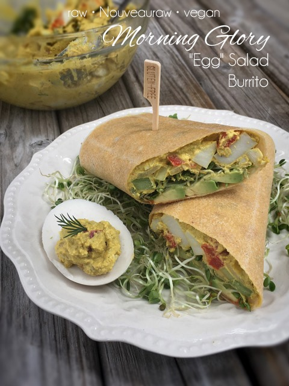

Morning Glory “Egg” Salad Burrito

~ raw, vegan, gluten-free, nut-free ~
Do you ever crave egg salad? I sure do. It’s fresh-tasting, hearty, satisfying, and surprisingly versatile. You can eat it with a spoon, smoosh it between two pieces of bread, plop a dollop on a bed of greens or roll it into a burrito. And today, that is exactly what I did… rolled it into a burrito that is, not all of thee above. hehe
Egg salad typically starts with hard-boiled eggs. But not in this recipe. To make this recipe vegan, I created eggs from a simple mixture of almond milk, agar, and Kala Namak (Indian Black Salt). This particular salt cannot be omitted. It is a requirement in order to create that eggy flavor. With this simple technique (listed below), you will find the flavor and texture spot on.
After eggs, mayonnaise usually comes in second to create that creamy “sauce” that holds everything together. I have other “egg” salad recipes on my site that are cashew based, cauliflower based, and agar-based… but today, I used sunflower seeds so I could keep the recipe not only vegan but also nut-free.
To get that golden-yellow color of true egg salad, I used turmeric with a sidekick of mustard. From there the rest was easy. It was all about finding a balance in texture and flavor. Egg salad has bright, fresh flavors and a texture that spans from rich and creamy to crisp and crunchy.
For my burrito wrap, I used coconut wraps. Below I share how you can enjoy this burrito at room temperature, chilled, or even dehydrated. Once you pop them in the dehydrator, they take on a cooked appearance (not typical for egg salad but delicious none the less). The flavors also increase once dehydrated. My best advice is to try all three versions for variation. For the non-dehydrated version, I loaded the burrito with “egg” salad, a bed of fresh sprouts, creamy avocado, and a squirt of sriracha. Delicious!
For the dehydrated version, I have eaten them out of hand on the go style or fully plated with sprouts, avocado, and salsa on top. This created a more sophisticated version that is meant to be eaten with a fork. Some days I want to hold the burrito in my hand like the trucker daughter kind of girl that I am… and other days, I like to act all fancy-like and break out the silverware. Both ways are a true experience.
If it’s at all possible, stick to the recipe so you can actually experience all the flavors and textures that are meant to be enjoyed. I hope you enjoy this recipe and place let me know. Blessings, amie sue
Yields 5 cups of “egg” batter (1/2 cup per serving = 10 burritos)
“Egg whites”:
“Egg” mixture:
- 1 1/2 cups raw sunflower seeds, soaked 2+ hours
- 1/2 cup water
- 3 Tbsp yellow mustard or raw mustard
- 2 Tbsp raw apple cider vinegar
- 2 tsp raw maple syrup or agave nectar
- 1 tsp smoked paprika
- 1/2 tsp onion powder
- 2 tsp dried dill
- 1/2 tsp curry powder
- 1/2 tsp turmeric powder
- 3/4-1 tsp Kala Namak (Indian Black Salt)gives egg taste
- 1/8 tsp ground black pepper
Mix-ins:
Coconut wraps:
Egg whites”:
- Place the almond milk, agar, and salt in a small saucepan.
- Turn the heat on medium-high and whisk until it starts to bubble.
- Reduce the heat to medium and continue to whisk for 4 minutes. We need to make sure the agar dissolves.
- Pour the mixture into an 8×8″ pan. No need to line or grease the pan.
- Allow it to cool for about 15 minutes then place in the fridge for at least 30 minutes.
- Once they are firm, plop it out onto a cutting board (resist playing with it… better yet… go ahead!) and with a knife, cut into small squares. Set aside to make the filling.
“Egg” Salad mixture:
- Soak, drain and rinse the sunflower seeds, then add to the blender.
- Add the water, mustard, apple cider vinegar, maple syrup, paprika, onion powder, dill, curry powder, turmeric, Indian Black salt, and pepper. (Whew, I think I got it all). Blend until smooth and creamy.
- Pour into a medium-sized mixing bowl and set aside.
Mix-ins:
- Add the bell pepper, celery, onion, and pickles. Gently fold into the sauce.
- Lay a coconut wrap in front of you and pile on the goodness! Don’t forget to try them cold, room temp, or dehydrated at 115 degrees for a few hours.
- For the egg salad mixture, you can enjoy it right away or chill for a few hours to give the ingredients time to meld. I don’t recommend freezing left-overs due to loss of texture.
© AmieSue.com